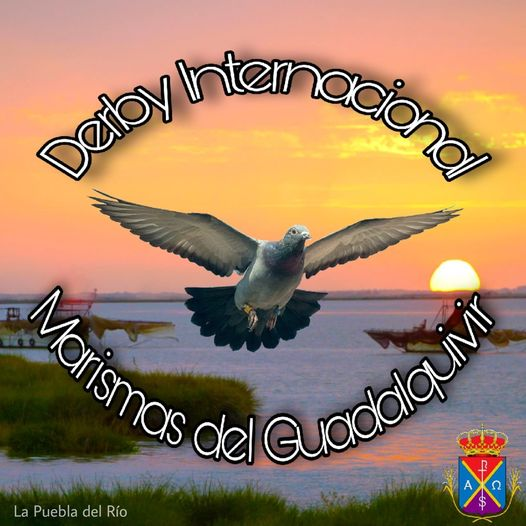
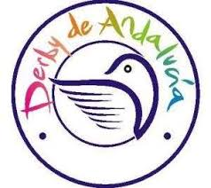
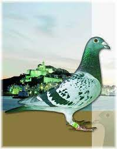

ALGUNOS DERBY ESPAÑOLES
DERBY EL TORCAL.- Villanueva de la Concepción (Málaga)
DERBY COSTA DEL SOL.- Málaga

DERBY MARISMAS DEL GUADALQUIVIR.- Zona Puñanilla, s/n.- La Puebla del Río(Sevilla)
DERBY INTERNACIONAL CHIPIONA.- (Cádiz)
DERBY COSTA DE LA LUZ.- San Fernando (Cádiz)

DERBY DEL MEDITERRANEO.- Castellón de la plana.

DERBY CARMELOYUPI.- Bormujos (Sevilla)
DERBY RIAS BAIXAS .- Ribadumia (Pontevedra)

DERBY DE ANDALUCIA.- Jerez de la Frontera (Cádiz)
DERBY PIGEON RACE.- Coria del Rio (Sevilla)
DERBY DE MALLORCA.- Inca (Baleares)

DERBY ISLA DE IBIZA.- Ibiza
DERBY VALLE DE GÜÍMAR.- Santa Cruz de Tenerife

DERBY MASPALOMAS.- San Bartolomé de Tirajana (Gran Canaria)
Palomar Saavedra